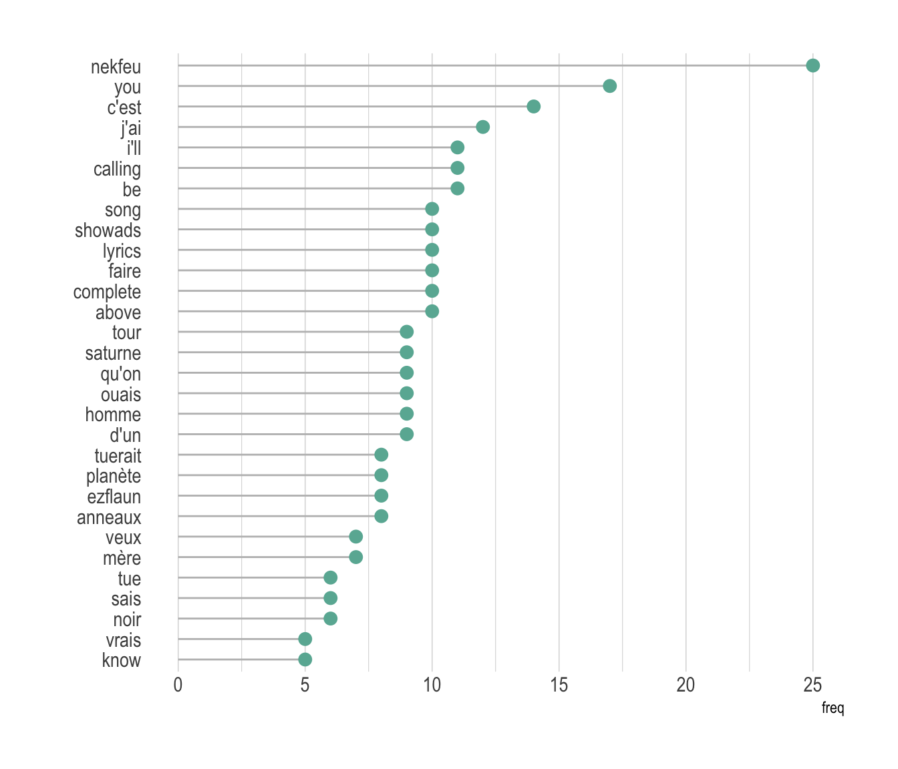

Wordcloud
definition - mistake - related - code
A word cloud (also called tag cloud or weighted list) is a visual representation of text data. Words are usually single words, and the importance of each is shown with font size or color.
Here is an example showing the most frequent words used by Nekfeu, a famous french raper, in a few of his songs. You can read more about this story here.
# Libraries
library(tidyverse)
library(hrbrthemes)
library(tm)
library(proustr)
# Load dataset from github
data <- read.table("https://raw.githubusercontent.com/holtzy/data_to_viz/master/Example_dataset/14_SeveralIndepLists.csv", header=TRUE)
to_remove <- c("_|[0-9]|\\.|function|^id|script|var|div|null|typeof|opts|if|^r$|undefined|false|loaded|true|settimeout|eval|else|artist")
data <- data %>% filter(!grepl(to_remove, word)) %>% filter(!word %in% stopwords('fr')) %>% filter(!word %in% proust_stopwords()$word)
# The wordcloud 2 library is the best option for wordcloud in R
library(wordcloud2)
# prepare a list of word (50 most frequent)
mywords <- data %>%
filter(artist=="nekfeu") %>%
dplyr::select(word) %>%
group_by(word) %>%
summarize(freq=n()) %>%
arrange(freq) %>%
tail(30)
# Make the plot
wordcloud2(mywords, minRotation = -pi/2, maxRotation = -pi/2,
backgroundColor = "white", color="#69b3a2")Wordcloud is useful for quickly perceiving the most prominent terms and for locating a term alphabetically to determine its relative prominence. It is widely used in media and well understood by the public.
However, it is a highly criticized way to convey information due to its lack of accuracy. This is due to 2 main reasons:
Area is a poor metaphor of a numeric value that is hardly perceived by human eye. Thus readers struggle to translate word size to an accurate frequency. (read more)
Longer words appear bigger by construction, since they are composed by more letters. It creates a bias that makes wordcloud even less accurate.
A good workaround is to use barplot or lollipop plot instead. Here is an example using the same data as the previous chart:
# prepare a list of word (30 most frequent)
data %>%
filter(artist=="nekfeu") %>%
dplyr::select(word) %>%
group_by(word) %>%
summarize(freq=n()) %>%
arrange(freq) %>%
tail(30) %>%
mutate(word=factor(word, word)) %>%
ggplot( aes(x=word, y=freq) ) +
geom_segment( aes(x=word ,xend=word, y=0, yend=freq), color="grey") +
geom_point(size=3, color="#69b3a2") +
coord_flip() +
theme_ipsum() +
theme(
panel.grid.minor.y = element_blank(),
panel.grid.major.y = element_blank(),
legend.position="none"
) +
xlab("")
Many variations exist for wordclouds. Shapes are often changed, sometimes using the shape of an object related to the topic. It is also possible to play with text orientation, font, size, colors etc.
mywords <- data %>%
filter(artist=="nekfeu") %>%
dplyr::select(word) %>%
group_by(word) %>%
summarize(freq=n()) %>%
arrange(desc(freq)) %>%
head(200)
# Make the plot
library(webshot)
#webshot::install_phantomjs()
# Make the graph
my_graph=wordcloud2(mywords, size=0.6, shape = 'star', backgroundColor = "white", color="#69b3a2")
library("htmlwidgets")
saveWidget(my_graph,"tmp.html", selfcontained = F)
# and in png
webshot("tmp.html","IMG/fig_1.png", delay =5, vwidth = 700, vheight=700)
The R and Python graph galleries are 2 websites providing hundreds of chart example, always providing the reproducible code. Click the button below to see how to build the chart you need with your favorite programing language.
R graph gallery Python gallery
Any thoughts on this? Found any mistake? Disagree? Please drop me a word on twitter or in the comment section below:
A work by Yan Holtz for data-to-viz.com